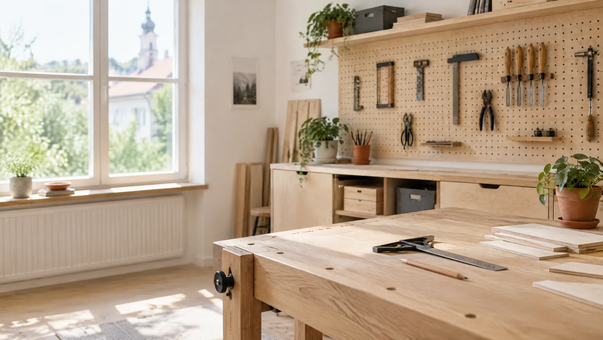
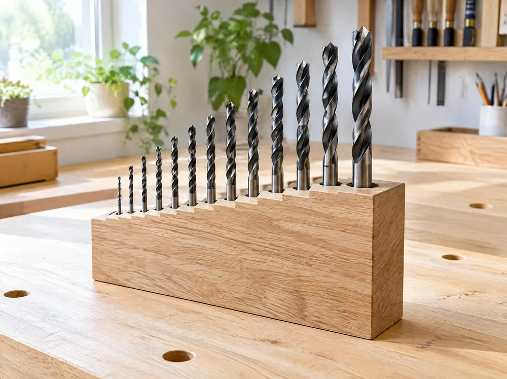
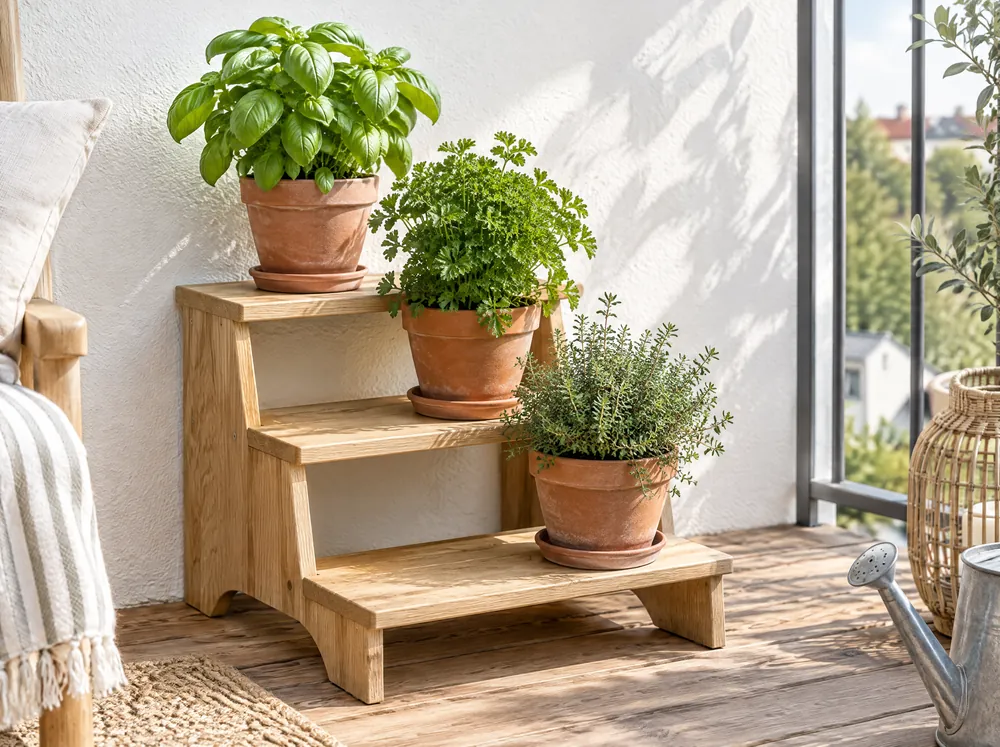

Hotový návod
Hotový návod
Dielňa
Zakladač na brúsne kotúče
Úzky stojan na 20 druhov brúsnych kotúčov Ø125 a Ø150 mm. Každá zrnitosť má svoj priečinok.
Návody do domu, dielne a záhrady. Každý má presné rozmery, zoznam materiálu a fotku ku každému kroku.

Hotový návod
Úzky stojan na 20 druhov brúsnych kotúčov Ø125 a Ø150 mm. Každá zrnitosť má svoj priečinok.
 Hotový návod
Hotový návod
Päť háčikov, polička na okuliare, vanička na peňaženku a magnetický pás. Všetko na jednom mieste pri vchode.

PripravujemeJeden dubový blok, v ktorom má každý vrták svoju dieru. Veľkosť vidíš na prvý pohľad.

PripravujemeSchodíkový stojan na balkón alebo terasu. Tri kvetináče, každý dostane dosť svetla.
V tejto kategórii zatiaľ nič nie je. Skús inú.